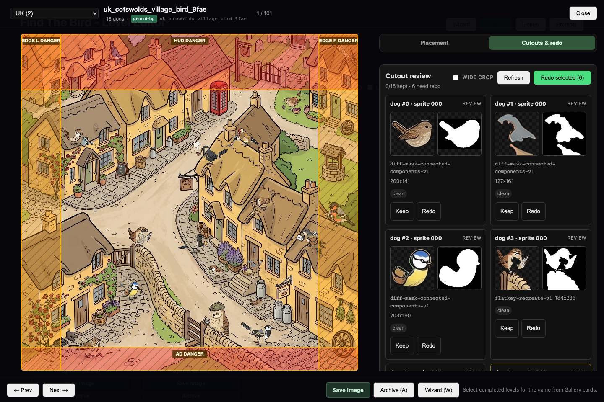

Cutout review now lives where review happens.
Focused Gallery has a dedicated Cutouts & redo mode. It uses the existing regeneration authority, so review does not create a second job path or silently rewrite level geometry.
Multi-selectKeep several acceptable cutouts or mark several for redo before submitting.
Fast resendRedo selected submits the existing per-dog regeneration flow, then recomposites once and refreshes candidates.
Fail visiblyIndividual failures remain reported; missing masks render as an explicit fallback instead of broken image chrome.
